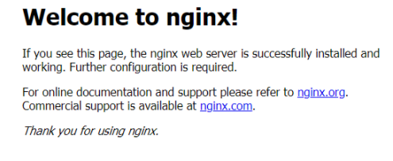

1.安装Nginx
1.安装Nginx依赖库
1 | yum install gcc-c++ |
2.下载Nginx
版本可以自己到官网选择
1 | wget http://nginx.org/download/nginx-1.8.0.tar.gz |
解压
1 | tar -xzvf nginx-1.8.0.tar.gz |
3.安装Nginx
在nginx-1.8.0目录下
1 | ./configure $默认安装在/usr/local/nginx-1.8.0 |
4.测试安装是否成功
启动nginx
1 | cd /usr/local/nginx/sbin/ |
看一下本机端口开放情况
1 | netstat -lnput |
访问本机ip出现nginx测试页面

停止
1 | nginx -s stop |
2.Nginx反向代理
修改nginx配置
1 | cd /usr/local/nginx/conf |
新增或者直接修改相应的属性值
1 | server { |
再启动nginx
1 | cd /usr/local/nginx/sbin/ |
ok ~